Я приехал поступать в лучший технический вуз России из небольшого села в Таджикистане. Это был колоссальный скачок сложности. МФТИ стал для меня школой выживания: там я получил базу по C++ и математике, которую невозможно получить на обычных онлайн-курсах. Это сформировало мое инженерное мышление: "разбираться до байта".
Asad Sultonov (timurfays@gmail.com)
C++ programmer | Researcher
Инженер-исследователь с нетривиальным академическим путем. Сочетаю школу алгоритмов МФТИ с практическим опытом построения Big Data систем.
🛠 Технический Арсенал
C++ (STL)
Python
SQL
Apache Airflow
Apache Spark
dbt
Docker
Git
Bash / Shell
Design Patterns
SFML
🎓 Академический путь
Моя траектория обучения — это поиск наиболее сильных инженерных школ и преодоление жизненных обстоятельств.
МФТИ (Московский физико-технический институт)
Факультет: ФИВТ / ФПМИ (уточни свой) | 4 семестра
📖 Моя история: Путь в Долгопрудный
Ключевые дисциплины: Алгоритмы и структуры данных, Технологии программирования (C++, Patterns), Математический анализ, Линейная алгебра, Дискретная математика.
📸 Атмосфера обучения:


.jpg)

.jpg)
Санкт-Петербургский Государственный Университет (СПбГУ)
Направление: Прикладная математика, программирование и ИИ | Перевод
📖 Моя история: Перевод и Практика
По личным обстоятельствам я перевелся в СПбГУ. Здесь фокус сместился с "чистой науки" на прикладные задачи: анализ данных, искусственный интеллект и распределенные системы. Впоследствии, из-за семейных обстоятельств, я был вынужден прервать обучение (отчисление по собственному желанию), но продолжил развивать свои навыки через проектную деятельность.
📸 Учебный процесс:


🏛 Проект: Graph Visualization Framework
C++ • SFML • Design Patterns
Разработка графической библиотеки для визуализации алгоритмов на графах (Johnson's Algorithm / APSP).
Вместо использования готовых решений, я спроектировал собственный движок рендеринга. Проект демонстрирует работу с памятью (smart pointers), шаблонами и архитектурными паттернами.
📖 История: Проблема интерпретации данных (APSP)
В университете дали задачу: реализовать алгоритм Джонсона (поиск кратчайших путей между всеми парами вершин). Стандартное решение — вывод матрицы $V \times V$ в консоль.
Я понял, что это инженерный тупик: в потоке тысяч чисел невозможно быстро найти путь от конкретной точки А к точке Б. Данные есть, а информации — нет.
Я решил проблему, написав GUI-интерфейс. Пользователь выбирает вершины мышкой, а система визуализирует путь, извлекая его из предрасчитанных данных. Это превратило "сухую лабу" в рабочий инструмент.
📄 Архитектура и Технические детали
Архитектура: Реализовано строгое разделение логики графа и его отрисовки (Separation of Concerns).
- Core: Граф хранится в виде списков смежности (оптимизация памяти для разреженных графов).
- VizController & Layers: Система слоев позволяет накладывать результаты алгоритмов (например, подсвеченный путь) поверх основного графа без изменения его структуры.
- Memory Management: Активное использование
std::unique_ptrдля автоматического управления временем жизни объектов визуализации. - Interfaces: Базовый класс
Drawableобеспечивает полиморфизм для всех рендеримых объектов.
📸 Демонстрация работы:

📑 Курсовая работа №1
Theory • Research • Grade: A
Тема: "Сравнительные характеристики ETL и ELT при обработке больших данных".
Фундаментальное исследование архитектурных подходов. Работа систематизирует знания о пайплайнах данных и была высоко оценена комиссией СПбГУ (Оценка: Отлично/A).
📄 Аннотация работы
Цель работы — систематизировать знания об ETL и ELT в контексте обработки больших данных, раскрыть их сравнительные характеристики, архитектурные особенности, экосистемы инструментов и ключевые метрики производительности, а также изучить переход от ETL к ELT с учётом современных технологий. Структурно работа включает рассмотрение исторической эволюции подходов , детальное сопоставление архитектур и технических особенностей, анализ сценариев, обсуждение реальных кейсов, связь с современными трендами, обзор инструментов, выводы, заключение, список литературы.
📸 Материалы работы:
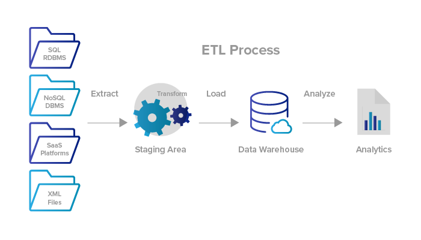
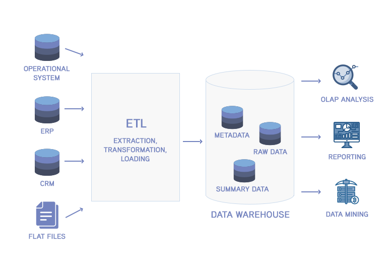
📑 Курсовая работа №2
Applied Research • Cloud • EtLT
Тема: "Практическая реализация ETL/ELT-конвейеров и оценка российских облачных платформ".
Прикладное исследование. Логическое продолжение теоретической работы.
📄 Аннотация и Задачи
Цель: Продемонстрировать реализацию гибридного подхода EtLT на примере финтех-стартапа «FinBest».
- Описана архитектура с учётом требований ФЗ‑152 и ФЗ‑115.
- Спроектирован pipeline: Airflow + PostgreSQL + Spark.
- Проведен сравнительный анализ российских облаков (Yandex, VK, MTS).
📸 Иллюстрации из работы:
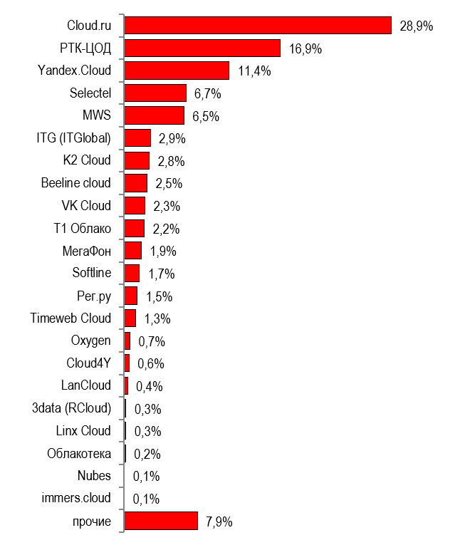
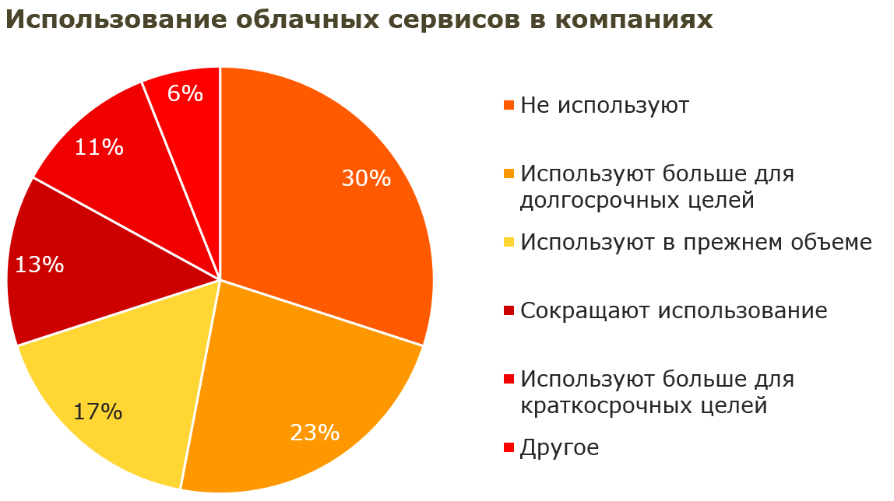
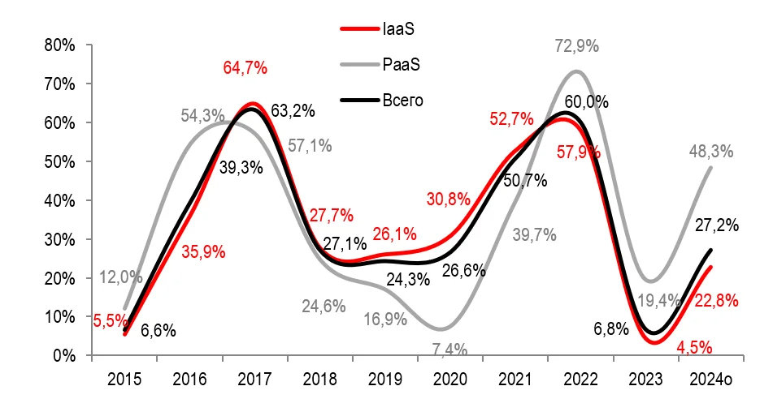
🚀 Проект: FinBest
EtLT • Airflow • Spark • GraphFrames
Техническая реализация Курсовой работы №2.
Полноценная платформа для анализа финансовых транзакций, развернутая в Docker.
Реализует полный цикл обработки данных: от сырых CSV до интерактивных дашбордов и графовой аналитики.
📖 История проекта: От теории к практике
Я не хотел писать очередную курсовую "в стол". Мне было важно создать работающий прототип. FinBest эмулирует реальную среду финтех-компании: потоки транзакций, необходимость скрывать данные (маскирование) и искать мошенников (ФЗ-115). Здесь я применил знания графовых алгоритмов (из проекта на C++) к Big Data стеку (Spark GraphFrames).
📄 Технический стек и Компоненты
ETL & Orchestration (Airflow):
mask_pii.py: Маскирование персональных данных (SHA-256) до загрузки в DWH (соблюдение ФЗ-152).transform.py: Запуск dbt-моделей и Spark-джобов.
Analytics & Fraud Detection (Spark):
build_graph.py: Построение графа транзакций, расчет PageRank и поиск сообществ (Louvain).detect_suspicious.py: Выявление аномалий (ФЗ-115) на основе правил и графовых метрик.
Data Modeling (dbt): Построение витрин данных (слои staging, intermediate, mart) внутри PostgreSQL.
Visualization: Автоматическая генерация дашбордов в Superset и Ad-Hoc анализ в Jupyter.
📸 Галерея реализации:
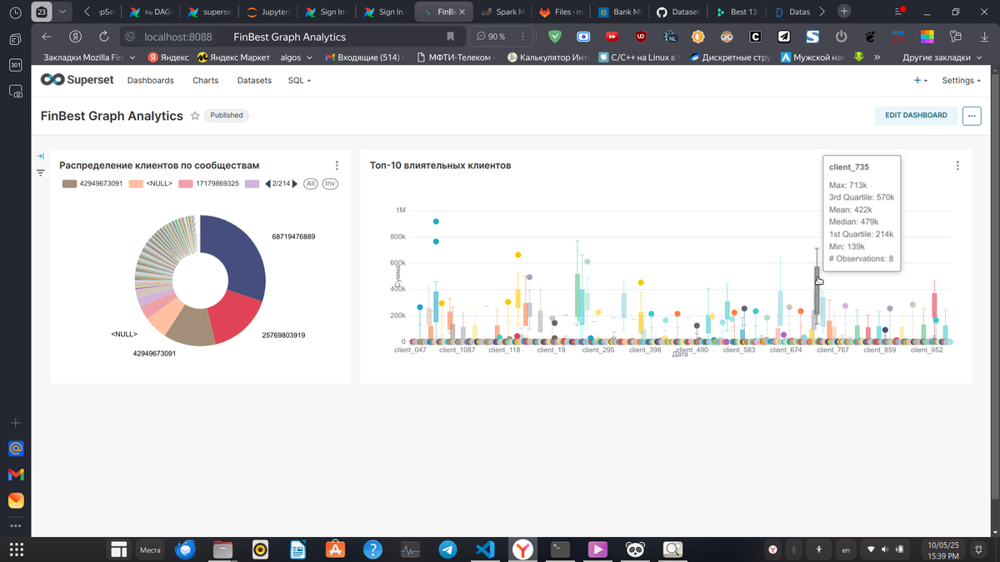
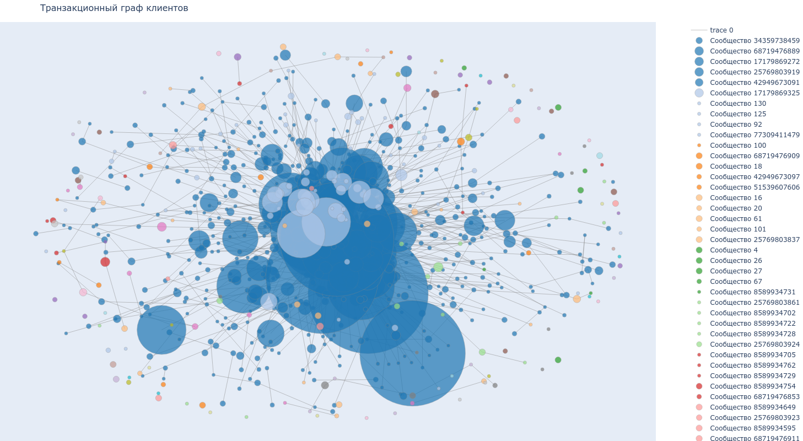
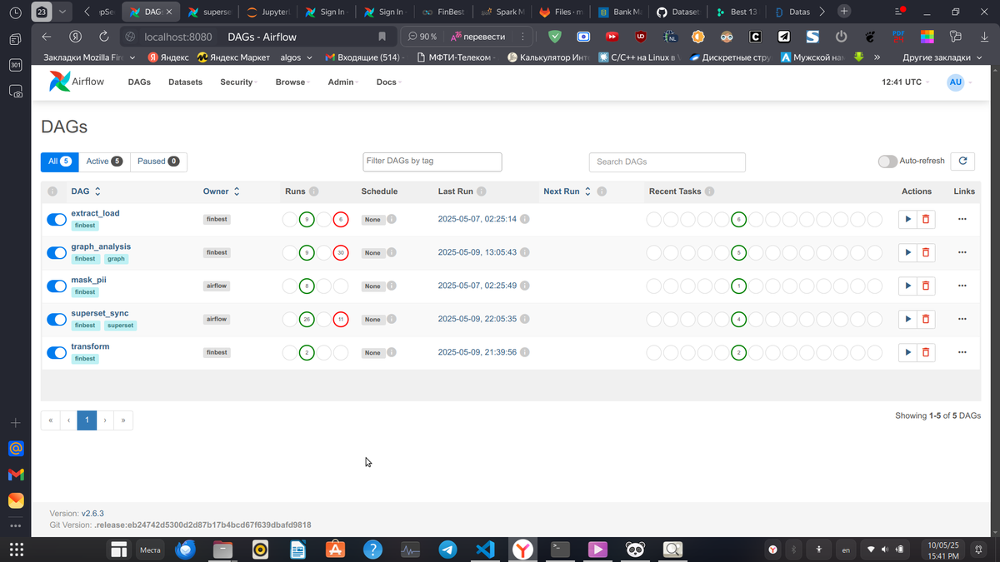
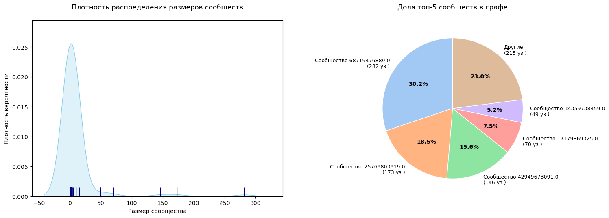
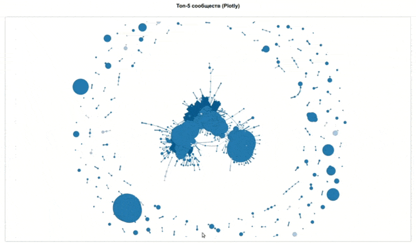
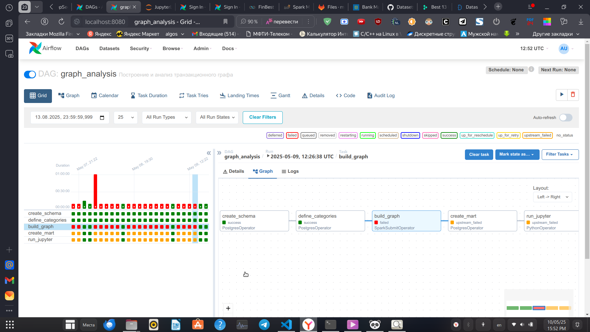
🕸 Интерактивный граф (Pyvis)
Результат работы алгоритма кластеризации клиентов. Узлы можно перетаскивать для анализа связей.
📓 Открыть Ad-Hoc Анализ (Jupyter Notebook)
© 2025 Asad Sultonov